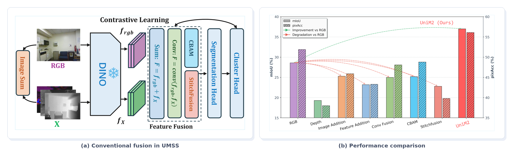
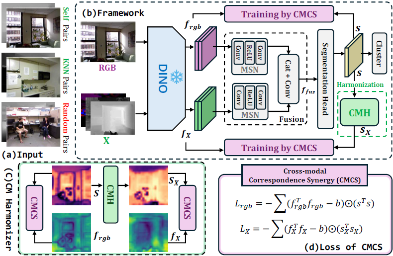
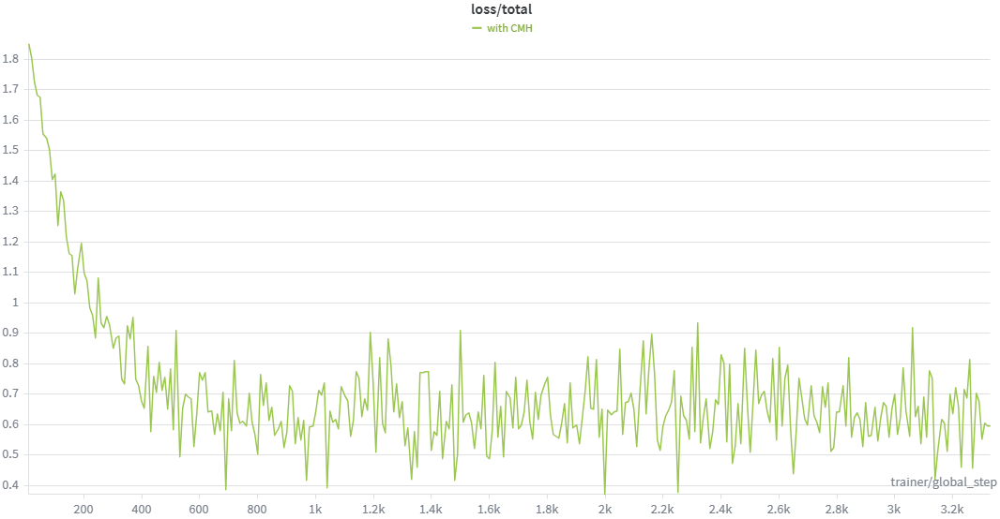
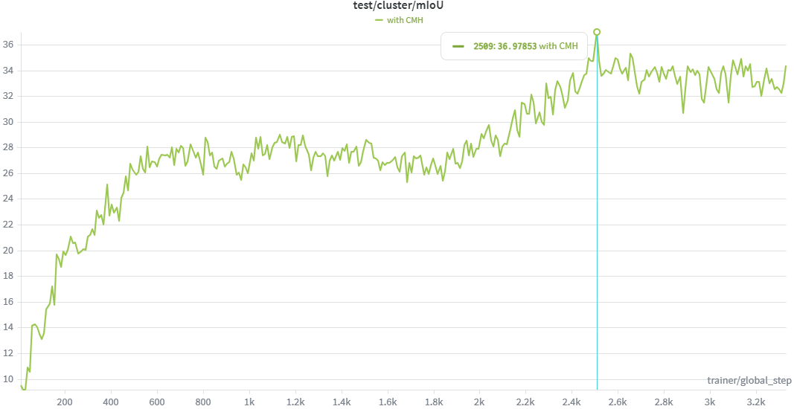

Component 01
Cross-modal Correspondence Synergy
CMCS drives the unified latent space to preserve shared semantic relations across RGB, depth, thermal, NIR, AoLP, and DoLP modalities.
Towards Unsupervised Multi-modal Semantic Segmentation
Nanyang Technological University, SingaporeThe University of Hong Kong
Multi-modal semantic segmentation (MSS) is essential for robust perception in complex environments, yet its potential remains largely untapped due to the prohibitive cost of human annotations. While unsupervised semantic segmentation (USS) has seen success on single RGB modality, its naive extension to multi-modal data is hampered by fusion degradation. This is because, in the absence of explicit supervision, existing frameworks struggle to reconcile the heterogeneous structural patterns captured by different sensors, failing to effectively exploit their complementary information. In this paper, we make the first attempt to address the novel problem of Unsupervised Multi-modal Semantic Segmentation (UMSS), aiming to effectively exploit complementary sensor information in a fully label-free setting. To this end, we propose UniM2 (Unified Multi-Modal), a novel framework built upon DINOv3 that transforms conventional fusion methods into consistent performance gains. Our key idea is to learn a unified latent space driven by Cross-modal Correspondence Synergy (CMCS) to extract intrinsic shared semantic cues, bypassing the need for label-guided adaptive fusion. To mitigate inherent inter-modal conflicts, we introduce a Cross-modal Harmonizer (CMH) that designates RGB as a stable reference, effectively suppressing inconsistent relational supervision while guiding the model to exploit complementary structural features. Extensive experimental results on NYU-Depth-v2 and MFNet show that UniM2 improves mIoU by 6.4% and 9.8%, respectively, demonstrating clear advantages over existing frameworks in UMSS task.
Core Question
Can heterogeneous sensor modalities be fused effectively for semantic segmentation without using any human annotations?
UMSS starts from a practical bottleneck: multi-modal semantic segmentation is valuable in complex scenes, but dense human annotations are expensive to obtain. Existing supervised fusion modules learn when to trust RGB, depth, thermal, or polarization cues from labels; once those labels disappear, the same fusion strategy can amplify inter-modal conflicts instead of extracting complementary structure.
Our preliminary analysis shows that naively importing conventional image-level, feature-level, or supervised fusion into unsupervised segmentation often degrades performance below the RGB-only baseline. UniM2 is designed to answer this question by learning a unified latent space from cross-modal correspondences, while filtering unreliable relations before they become harmful supervision.

Framework Summary
UniM2 builds a shared representation space from multimodal DINOv3 features. Cross-modal Correspondence Synergy extracts shared semantic cues, while the Cross-modal Harmonizer uses RGB as a stable reference to suppress contradictory relational supervision.
Component 01
CMCS drives the unified latent space to preserve shared semantic relations across RGB, depth, thermal, NIR, AoLP, and DoLP modalities.
Component 02
CMH reduces conflicts from heterogeneous sensors by filtering inconsistent cross-modal relational supervision and preserving complementary structure.
UniM2 Pipeline

01
We define the UMSS task for fully label-free multimodal semantic segmentation.
02
UniM2 turns multimodal fusion degradation into consistent gains through unified latent learning.
03
The framework scales across NYU-Depth-v2, MFNet, and MCubeS with multiple auxiliary modalities.
04
We release simplified code, prepared datasets, checkpoints, and training diagnostics for reproducibility.
We recommend using Weights & Biases to monitor the contrastive loss and validation mIoU curves during hyperparameter search and training.

